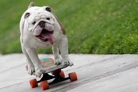

Perrito skater
03/03/24

El bulldog skater entró en los récords Guinness tras recorrer un
‘túnel humano’ al pasar entre las piernas de 30 personas en conmemoración
del Día Internacional de Récords, en 2015. Dueños informaron que se
encontraba mal de salud. Fallecido